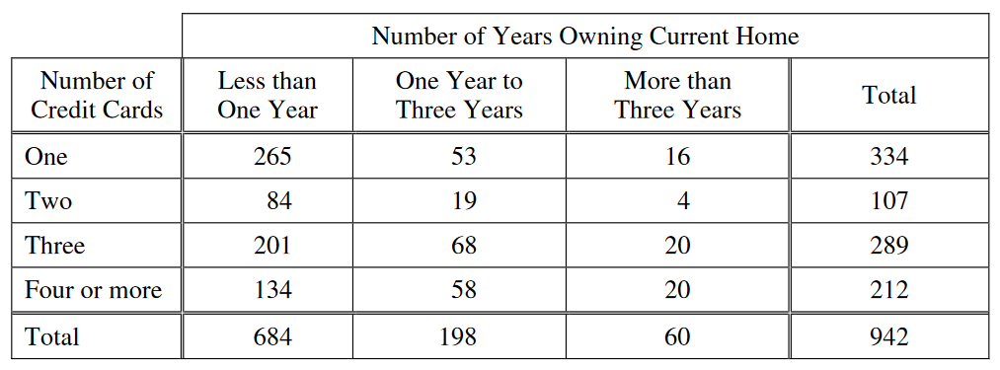

A sample of 942 homeowners are classified, in the two-way frequency table below, by the number of credit cards they have and the number of years they have owned their current homes.

Of the homeowners in the sample who have four or more credit cards, what proportion have owned their current homes for at least one year?